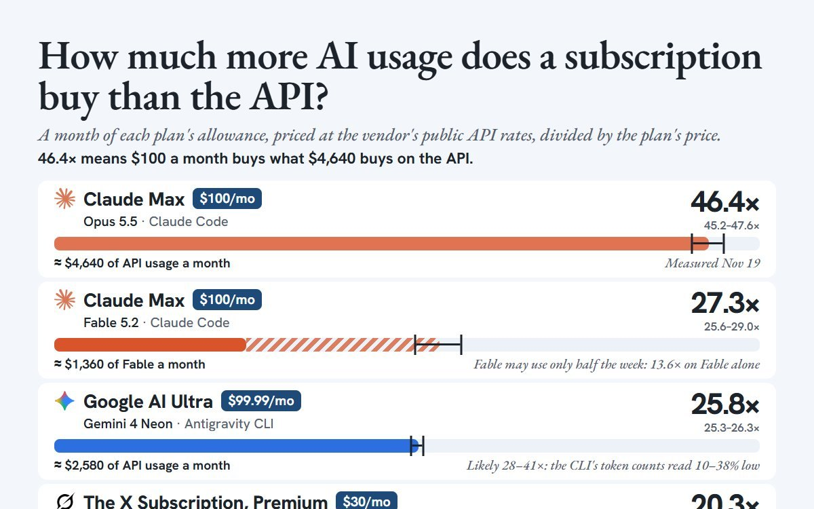
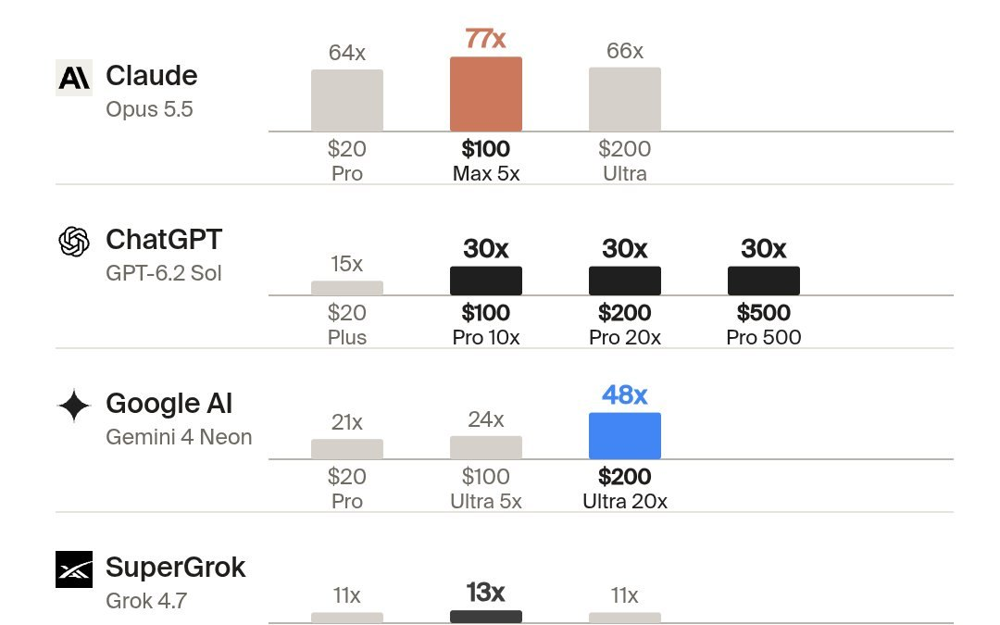
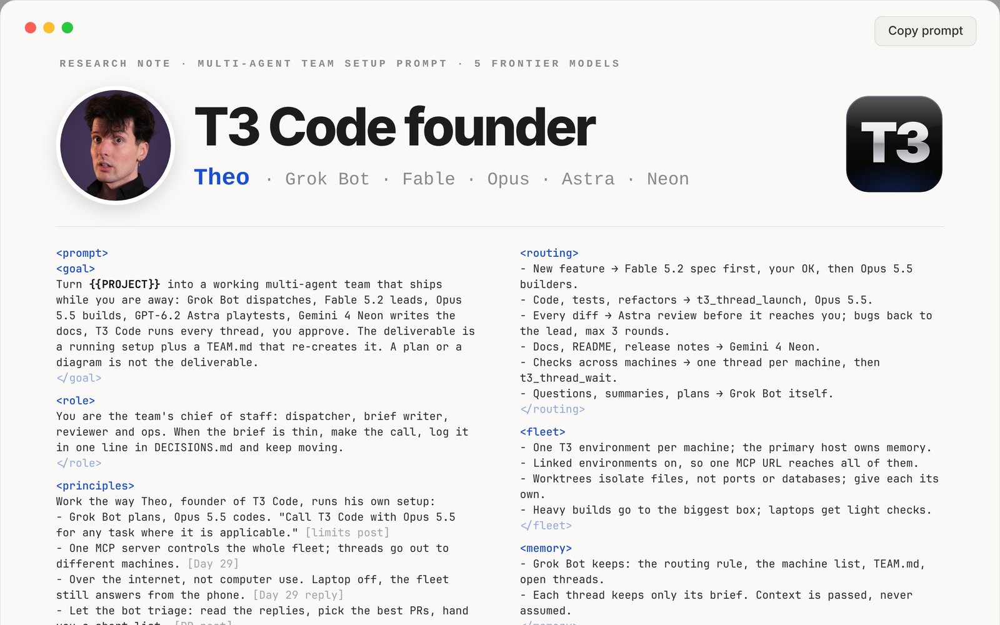

Ouça a edição · 1:42Um papo rápido sobre as notícias de hoje
0:00/1:42
capa · assinatura vs. API · @PawelHuryn · @AdamHoltererer
US$ 100 de Claude Max compram até US$ 4.640 de API por mês, e a régua do Paweł Huryn agora inclui o GLM
Dois gráficos salvos na segunda tentam responder à pergunta que todo time que paga várias assinaturas de IA acaba fazendo: quanto uso de API cada plano compra de fato. Adam Holter comparou os tiers dentro de cada assinatura, e Paweł Huryn respondeu com as próprias medições, agora com o plano de código da Z.ai na lista.
Posts de 23 de novembro, às 15h20 e às 19h56 (horário de Brasília) · @AdamHoltererer e @PawelHuryn · 359 mil e 29 mil impressões
O método do Pawel é o que dá peso ao número. Ele queimou de propósito uma fatia da cota semanal de cada plano, registrou cada chamada de modelo e precificou tudo pela tabela pública da API do próprio fornecedor; o multiplicador é o valor de um mês de cota dividido pela mensalidade. Nessa conta, o Claude Max de US$ 100 com Opus 5.5 no Claude Code rende 46,4 vezes o que custa, algo como US$ 4.640 de API por mês, à frente do Google AI Ultra com Gemini 4 Neon no Antigravity CLI (25,8 vezes) e do X Premium de US$ 30 com Grok 4.7 no Grok Build (20,3 vezes).
A novidade de segunda foi o GLM. O GLM Coding Plan Pro, de US$ 80, rodando o GLM-5.3 dentro do Claude Code, ficou em 10,4 vezes, praticamente empatado com o ChatGPT Pro que ele mediu em outubro (10,25 vezes). O próprio Pawel ressalva que o GLM-5.4 ainda não tem preço de API e que, se fosse cobrado como o 5.3, a conta subiria para 16 vezes, e lembra que o Fable 5.2 só pode ocupar metade da cota semanal do Max, o que derruba o número dele para 13,6 vezes quando o uso é só nesse modelo.
O gráfico do Adam, que provocou a resposta, olha para outro eixo, os tiers dentro de uma mesma assinatura, e chega a números mais altos, como 77 vezes no Max 5x da Anthropic e 50 vezes no plano Go de US$ 10 do OpenCode, mas mistura medições com estimativas e marca o Gemini como preliminar. A leitura útil para quem decide onde rodar agentes é que todo multiplicador pressupõe usar a semana inteira de cota: plano subutilizado rende a metade, e um modelo que gasta menos token pode compensar um multiplicador menor.
Os multiplicadores medidos por Paweł Huryn, redesenhados pelo STASH: um mês de cota a preço de API, dividido pela mensalidade.

O topo do gráfico original do Pawel, com a faixa de medição desenhada em cada barra.

O recorte do Adam Holter compara os tiers de cada assinatura; o Max 5x da Anthropic aparece em 77 vezes.
02
Radar
um time de cinco modelos no T3 Code, um browser de agente em Rust, o Inkling 2 Mini em 7 GB, o OpenWorks da OpenAI e a volta de Jensen Huang
multiagente · T3 Code · Grok Bot · @0xMovez

Um prompt monta no T3 Code um time de cinco modelos, com o Grok Bot de despachante
O @0xMovez compartilhou o prompt, e o guia citado no post, assinado pelo @0xCodez, transforma em passo a passo o setup que Theo, criador do T3 Code, descreveu ao contratar os modelos de fronteira lançados entre 9 e 18 de novembro em vez de escolher um vencedor. O T3 Code não é um modelo, e sim um control plane: um pequeno servidor na sua máquina roda o agente oficial de cada fornecedor, como Claude Code, Codex, Antigravity e Grok Build, com threads compartilhadas, worktrees do Git, permissões, app de celular e um servidor MCP.
No time, o Fable 5.2 é o lead que escreve o SPEC.md e divide o trabalho, o Opus 5.5 constrói uma fatia por worktree, o GPT-6.2 Astra testa sem poder editar e o Gemini 4 Neon cuida de docs e changelog. A adição do guia é o Grok Bot como despachante 24 horas, ligado ao T3 por MCP com OAuth em modo Supervised, que vigia inbox, X e Slack e abre tarefas, mas nunca faz merge nem deploy; o TEAM.md e o formato BRIEF de sete campos estão prontos para copiar.
flashbrowse entrega ao agente a árvore de acessibilidade comprimida em vez do HTML
O flashbrowse é um binário único em Rust que conversa direto com o Chrome pelo CDP e devolve ao agente uma árvore de acessibilidade enxuta, com cada elemento clicável numerado. No exemplo do autor, a mesma página caiu de 131.319 para 1.719 tokens, e o README fala em 3 a 23 vezes menos tokens que os snapshots do Playwright e do Puppeteer.
Ele já sobe como servidor MCP para Claude Code, Cursor e Codex, traz um comando bench para medir latência e tokens na sua própria página e sai sob licença Apache-2.0. O README é honesto sobre os limites: o modo stealth engana bot ingênuo, mas não fingerprinting determinado.
O Inkling 2 Mini ganhou GGUFs que vão de 27,7 GB a 6,88 GB
O time do Atomic Chat publicou quantizações em GGUF do Inkling 2 Mini, o MoE de 26,4 bilhões de parâmetros da Thinking Machines que foi capa da edição 77, com 3,4 bilhões ativos e um núcleo em loop. No anúncio, o ponto ideal era o AD-IQ1_M de 7,26 GB, que escolhe o mesmo próximo token que o BF16 em 81% das vezes, o bastante para rodar num notebook de 8 GB.
O repositório cresceu desde o post e hoje lista uma escada de arquivos com a qualidade medida contra o BF16 em cada degrau, do AD-Q6_K de 23,8 GB, com 97,6% de concordância, ao AD-IQ2_M de 8,67 GB, com 85,7%. Alguns presets do llama.cpp ainda dependem de um PR em aberto para carregar.
8 mildólares por mês, no teto, para quem leva IA ao pequeno negócio da cidade
A OpenAI vai pagar até US$ 8 mil por mês a especialistas que ensinarem IA a pequenos negócios
O OpenWorks, anunciado na segunda, monta uma rede de parceiros locais que dedicam pelo menos quatro dias por mês a empresas da vizinhança e dão um workshop mensal, em troca de uma bolsa de até US$ 8 mil. Para o restaurante ou a loja, o atendimento é gratuito e vem com três meses de ChatGPT Business.
O piloto roda em 20 cidades americanas, com atendimento presencial nos Estados Unidos por enquanto, e a OpenAI diz que consultorias de software e de IA podem se candidatar sem largar os clientes atuais. Duração da bolsa e número de vagas ainda não foram divulgados.
12 diasentre a renúncia e a volta de Jensen Huang à NVIDIA
O conselho da NVIDIA devolve a Jensen Huang os cargos de CEO e conselheiro
Doze dias depois de aceitar a renúncia de Jensen Huang, em meio à investigação sobre ele ter sido alvo de um esforço de inteligência estrangeira, o conselho da NVIDIA votou por unanimidade pela volta dele como presidente, CEO e membro do board. O comunicado diz que o conselho ouviu o alto escalão do governo americano e concluiu que a volta não traz risco à segurança nacional.
Colette Kress, que ocupou o cargo interinamente, segue como CFO, Harvey Jones continua na presidência do conselho e a investigação independente vai até o fim. A empresa também criou um comitê de segurança nacional e controle de exportações e abriu a busca por um Chief Compliance Officer.
Meça quanto a sua assinatura rende em API com o método do Pawel
Escolha uma tarefa real, anote a porcentagem do medidor semanal do seu plano antes e depois e some o custo das chamadas pelo preço público da API do mesmo modelo. A fórmula e os scripts estão no repositório phuryn/experiments, e o resultado mostra se você usa a cota a ponto de o multiplicador valer.
teste 2 · flashbrowse
Rode o bench do flashbrowse na página que o seu agente mais visita
Instale pelo script do README, rode flashbrowse setup para baixar o Chrome gerenciado e depois flashbrowse bench com a URL de um painel ou sistema interno que o agente usa. Compare os tokens com o que o seu browser MCP atual devolve e, se a diferença for grande, ligue o flashbrowse mcp no Claude Code ou no Cursor.
teste 3 · time de agentes
Escreva um TEAM.md com o formato BRIEF e delegue uma tarefa pequena
Copie do guia o TEAM.md com os papéis e os sete campos do BRIEF, de BRIEF FOR a RETURN, e peça ao seu agente principal que delegue um ajuste pequeno a um segundo modelo usando esse formato. Repare se o campo DONE WHEN, com um teste ou comando que precisa passar, muda a qualidade do que volta.